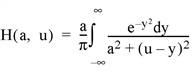
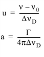

The VOIGT function returns the value of the classical Voigt function, H(a, u), defined in terms of the Voigt damping parameter a and the frequency offset u:

The dimensionless frequency offset u and the damping parameter a are determined by:

where ν0 is the line center frequency and the Doppler width ΔνD (assuming no turbulence), is defined as:
and, Γ is the transition rate:
where γ is the spontaneous decay rate, and νcol is the atomic collision rate. (See Radiative Processes in Astrophysics by G. B. Rybicki and A. P. Lightman (1979) p. 291 for more information.)
The Voigt function can be used to compute the intensity of an atomic absorption line profile (also known as a VOIGT profile). The line profile φ(a, u) is defined as:
The algorithm is from Armstrong, JQSRT 7, 85. (1967). The definition of the classical Voigt function H(a,u) can be found in Equation 7.4.13 of Abramowitz, M. and Stegun, I.A., 1964, Handbook of Mathematical Functions (Washington:National Bureau of Standards).
Result = VOIGT(A, U)
If both arguments are scalars, the function returns a scalar. If both arguments are arrays, the function matches up the corresponding elements of A and U, returning an array with the same dimensions as the smallest array. If one argument is a scalar and the other argument is an array, the function uses the scalar value with each element of the array, and returns an array with the same dimensions as the smallest input array. If A is double-precision, the result is double-precision, otherwise the result is single-precision.
A scalar or array specifying the values for the Voigt damping parameter.
A scalar or array specifying the values for the dimensionless frequency offset in Doppler widths.
This routine is written to make use of IDL’s thread pool, which can increase execution speed on systems with multiple CPUs. The values stored in the !CPU system variable control whether IDL uses the thread pool for a given computation. In addition, you can use the thread pool keywords TPOOL_MAX_ELTS, TPOOL_MIN_ELTS, and TPOOL_NOTHREAD to override the defaults established by !CPU for a single invocation of this routine. See Thread Pool Keywords for details.
|
Pre-4.0 |
Introduced |